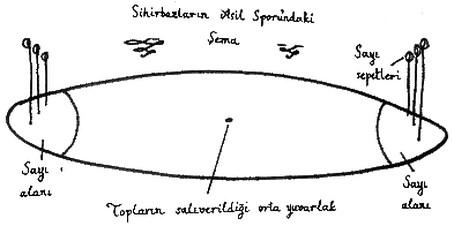
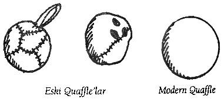

Altıncı
Bölüm:
On Dördüncü Yüzyıldan Bu Yana Quidditch'teki Değişiklikler
Saha
Zacharias Mump, on dördüncü yüzyılda kullanılan oyun sahasının oval biçimli, 150 metre boyunda ve 55 metre genişliğinde olduğunu, ortasında da küçük bir daire bulunduğunu yazıyor (bu dairenin çapı 60 santimetre kadardır). Mump, hakemin (ya da o zamanki adıyla Quiyargıç'ın) dört topu sahanın ortasındaki yuvarlağa götürdüğünü, orada on dört oyuncunun onun etrafına dizildiğini söylüyor. Toplar salınır salınmaz (Quaffle ise hakem tarafından havaya atılıyordu; aşağıdaki "Quaffle" maddesine bakınız), oyuncular hızla havalanıyorlardı. Mump'ın devrindeki kaleler, Resim C'de görüldüğü gibi, hâlâ sırıkların ucuna takılmış sepetlerden oluşuyordu.
Quintius Umfraville'in 1620 yılında yazdığı Sihirbazların Asil Sporu adlı kitap, on yedinci yüzyıl oyun sahasının bir çizimini içeriyordu (bakınız: Resim D). Burada, günümüzde "sayı alanları" olarak bilinen bölümlerin eklenmiş olduğunu görüyoruz. Kale direklerinin üzerindeki sepetlerse Mump'ın devrindekine kıyasla hem çok daha küçüktü, hem de çok daha yüksekte duruyordu.
1883'te sayı için sepetler değil bugünkü kale direkleri kullanılmaya başlanmış ve bu yenilik Gelecek Postası'na haber olmuştu (aşağıya bakınız). Quıdditch sahası o zamandan beri değişmedi.

Çizim D
Sepetlerimizi Geri Verin!
Dün gece ülkenin dört bir yanındaki Quidditch oyuncularından bu feryatlar yükseldi. Feryatların sebebiyse, Quidditch'te yüzyıllardır sayı
yapmada kullanılan sepetlerin Sihirli Oyunlar ve Sporları
Dairesi tarafından yakılacağının açıklanmasıydı.
Sinirli görünen bir Daire temsilcisi, konu hakkında kendisinden yorum istendiğinde, "Yakmıyoruz canım, abartmayın," dedi. "Fark etmişsinizdir, sepetler boy boy oluyor. Britanya'daki kale direklerinin birbirlerine eşit olması
amacıyla sepet boylanna bir standart getirmenin imkânsız olduğunu keşfettik. Herhalde bunun bir adalet meselesi olduğunu anlıyorsunuzdur. Yani, mesela Barnton yakınlarında bir takım var, karşı
takımın kale direklerine minyatür sepetler takıyorlar, içlerinden bir üzüm tanesi bile geçiremezsiniz.
Sahanın öbür ucundaki kendi taraflarında salınıp duran hasır sepetlerse öyle muazzam ki mağara sanırsınız.
Olmaz. Sabit bir
çember boyunda anlaşıp bu meseleye noktayı
koyduk.
Şimdi her
şey daha güzel, daha adil."
Daire temsilcisi bu cümlesini bitirdikten sonra, salonda toplanan kızgın göstericilerden gelen sepet sağnağının altında oradan kaçmak zorunda kaldı. Bunu takip eden ayaklanmanın vebali daha sonra cincüce kışkırtıcılara yüklense de,
şuna
şüphe yok ki Britanya'nın her yanındaki Quidditch hayranları
oyunun artık Quidditch olmaktan
çıkacağını
düşündükleri için yastalar.
"Sepetler olmadan, eskisi gibi olmayacak," diyor elma yanaklı
yaşlı
bir büyücü, üzüntüyle. "Hiç unutmam, gençken biraz eğlenmek için maç sırasında sepetleri ateşe verirdik. Çemberle bunu yapamazsın, işin tadı
kalmadı."
Gelecek Postası, 12
Şubat 1883
Toplar
Quaffle
Gertie Keddle'ın günlüğünden de bildiğimiz gibi, Quaffle en başından beri deriden yapılma bir toptu. Başlarda, dört topun içinde sadece Quaffle büyülü değildi. Sıradan, yamalı, deri bir toptu, tek elle yakalanıp tek elle atılması gerektiği için üzerinde genellikle bir kayış olurdu (bakınız: Resim E). Bazı eski Quaffle'lardaysa parmak delikleri vardı. Ancak 1875'te Kavrama Büyüsü'nün keşfedilmesiyle, kayışlar ve parmak delikleri gereksiz hale geldi, çünkü artık Kovalayıcı bu tür şeyler olmadan da büyülü deriyi elinden kaçırmaksızın tutabiliyordu.
Modern Quaffle otuz santimetre boyunda ve dikişsizdir. İlk olarak 1711 kışında, sağnak yağmurda oynanan ve yere düşünce çamurun içinde görülemediği bir maçın ardından kırmızıya boyanmıştı. Kovalayıcı'lar aynca, tutamadıkları her pasın ardından Quaffle'ı geri almak için yere dalışa geçmekten de iyiden iyiye sıkılmaya başlamışlardı. Bu yüzden renk değişiminden kısa süre sonra, Daisy Pennifold adlı cadının aklına bir fikir geldi: Quaffle'a öyle bir büyü yapacaktı ki, top düşürüldüğü zaman yere ağır ağır inecekti, sanki suda batıyormuş gibi. Böylece Kovalayıcı'lar da onu daha yere varmadan yakalayabileceklerdi. Günümüzde hâlâ "Pennifold Quaffle'ı" kullanılıyor.

Çizim E
Bludger'lar
Daha önce gördüğümüz üzere, ilk Bludger'lar (ya da "Blooder"lar) uçan kayalardı, Mump'ın devrindeyse ancak top biçiminde yontulmuş kayalar seviyesine ilerleyebilmişlerdi. Ancak bunların önemli bir dezavantajı vardı: On beşinci yüzyılın sihir yoluyla güçlendirilmiş sopalarıyla vurulduğunda parçalanabiliyorlardı, bu durumda da bütün oyuncular maçın sonuna dek uçan bir moloz yığını tarafından kovalanıyordu.
Herhalde bu sebepten dolayı, on altıncı yüzyılın başlarında bazı Quidditch takımları metal Bludger kullanma denemelerine başladılar. Tarihi büyücülük eserleri uzmanı Agatha Chubb, bu dönemden kalma, kurşundan yapılma tam on iki Bludger onayladı. Bunların bir kısmı İrlanda bataklıklarında, bir kısmıysa İngiliz bataklıklarında bulunmuştu. Chubb, "Hiç şüphe yok ki bunlar top güllesi değil, Bludger," diye yazıyor.
Üzerlerinde Vurucular'ın sihir yoluyla güçlendirilmiş sopalarının açtığı hafif çentikler var, aynca bir Muggle tarafından değil de büyücü tarafından yapıldıklarına dair belirgin işaretler de görülüyor - düzgün krvnmlan, kusursuz simetrisi gibi. Son bir ipucu ise, çantalarından çıkarılıp serbest bırakıldıklarında odamda vızır vızır uçup beni yere devirmeye çalışmalarıydı.
Sonraları kurşunun Bludger yapımında kullanılmak için fazla yumuşak olduğu anlaşıldı (bir Bludger'ın üzerinde açılan herhangi bir çentik, onun, düz uçma yetisini etkileyecektir). Artık Bludger'lar demirden yapılıyor. Yirmi beş santimetrelik bir çapa sahipler.
Bludger'lara, oyuncuları aralarında fark gözetmeden kovalamalarını sağlayan büyü yapılmıştır. Kendi hallerine bırakıldıklarında, en yakındaki oyuncuya saldırırlar. Bu yüzden de Vurucular'ın görevi Bludger'lara vurarak onları takımlarından mümkün olduğunca uzağa fırlatmaktır.
Altın Snitch
Altın Snitch de tıpkı Altın Sinicit gibi ceviz büyüklüğündedir. Mümkün olduğu kadar uzun bir süre boyunca yakayı ele vermeyecek şekilde büyülenmiştir. Rivayete göre, 1884'te Bodmin Kırları'nda bir Altın Snitch tam altı ay boyunca yakalanamamış, bunun sonucunda iki takım da Arayıcıları'nın zayıf performanslarından yaka silkerek maçı bırakmıştır. Bölgeyi bilen Cornwall'lı büyücüler, o Snitch'in hâlâ kırda yabanıl bir hayat sürdüğünde ısrar ediyorlar, ancak henüz bu iddiayı dogrulayabilmiş değilim.
Oyuncular
Tutucu
Tutucu pozisyonunun on üçüncü yüzyıldan beri var olduğu kesin (Dördüncü Bölüm'e bakınız), ancak bu pozisyondaki oyuncunun rolü zaman içinde değişti.
Zacharias Mumps'a göre:
Tutucu, kaledeki sepetlere ulaşan ilk oyuncu olmalı, çünkü Quaffle'ın o sepetlerden geçmesini engellemek onun işi. Tutucu sahanın öbür ucuna gitme konusunda dikkatli olmalıdır, aksi halde onun yokluğunda sepetlerinde gol tehlikesi yaşanabilir. Öte yandan hızlı
bir Tutucu, sayı
yaptıktan sonra rakip takıma durumu eşitleme
şansı
vermeden sepetlerine dönebilir. Dolayısıyla, bu tamamen Tutucu'nun vicdanına kalmış
bir meseledir.
Buradan açıkça anlaşılıyor ki, Mump'ın zamanında Tutucular fazladan sorumlulukları olan birer Kovalayıcı gibi oynuyorlarmış. Sahanın her tarafına gidip gol atmalarına izin veriliyormuş.
Ancak 1620'de Quintus Umfraville Sihirbazların Asil Sporu'nu yazdığında, Tutucu'nun görevi basitleştirilmişti. Artık oyun sahasına sayı alanları eklenmişti ve Tutucular'a bu alanların içinde kalıp sepetlerini korumaları öneriliyordu. Ama elbette Tutucular rakip Kovalayıcı'ların gözünü korkutmak ya da onları yarı yolda karşılamak için bu alanın dışına çıkabilirler.
Vurucular
Çok büyük ihtimalle Bludger'ların oyuna eklenmesinden beri var olan Vurucular'ın görevi yüzyıllar boyunca çok az değişti. Bu pozisyonda oynayanların öncelikli görevleri, takım arkadaşlarını Bludger'lardan korumaktır. Bu görevi sopaların yardımıyla yerine getirirler (eskiden kütük kullanırlardı, Üçüncü Bölüm'deki Goodwin Kneen'in mektubuna bakınız). Vurucular hiçbir zaman golcü olmamıştır, Quaffle'la ilgilendiklerine dair herhangi bir gösterge de yoktur.
Bludger'ları püskürtmek için Vurucular'ın epeyce fiziksel kuvvete ihtiyaçları vardır. Bu yüzden bu pozisyonda cadılardan çok büyücüler oynar Vurucular'ın ayrıca kusursuz bir dengeye de sahip olmaları gerekir, çünkü zaman zaman Bludger'a çift elle hamle etmek için iki ellerini de süpürgelerinden çekmek zorunda kalırlar.
Kovalayıcılar
Quidditch bir zamanlar sadece sayı yapmaktan ibaret olduğu için, Kovalayıcı bu oyundaki en eski pozisyondur. Kovalayıcılar Quaffle'ı birbirlerine atarlar ve bu topu sayı çemberlerinin içinden her geçirdiklerinde on sayı yapmış olurlar.
Kovalayıcılık'taki tek hatırı sayılır değişim 1884 yılında, sayı sepetlerinin yerine sayı çemberlerinin getirilişinden bir yıl sonra gerçekleşti. O yıl koyulan yeni bir kuralla, artık sadece Quaffle'ı taşıyan Kovalayıcı sayı alanına girebilecekti. Bu alana birden fazla Kovalayıcı girerse, gol iptal edilecekti. Bu kural, iki Kovalayacı'nın sayı alanına girip Tutucu'yu kenara savurarak üçüncüye yol açması anlamına gelen 'koltuklama'yı (aşağıdaki “Fauller” bölümüne bakınız) önlemek için getirildi. Bu yeni kurala yönelik tepkiler, o zamanın Gelecek Postasında yayınlanmıştı.
Kovalayıcılarımız Hile Yapmıyor!
Dûn gece Britanya'nın dört bir yanındaki Quidditch hayranlarından, bu tür hayret dolu tepkiler yükseldi. Bu tepkilerin sebebi, dün gece Sihirli Oyunlar ve Sporlar Dairesi'nin "Koltuklama Yasağı" denilen yeni bir kuralı
açıklamasıydı.
Epey tedirgin görünen bir Daire temsilcisi dün gece yaptığı
açıklamada, "Koltuklama olayları
giderek artıyor," dedi. "Yeni kuralın artık sık sık görülmeye başlanan Tutucu sakatlanmalarını
ortadan kaldıracağını
düşünüyoruz. Bundan böyle tek bir Kovalayıcı
Tutucu'yu alt etmeye çalışacak, üç tane Kovalayıcı
Tutucu'nun üstünden geçmeye çalışmayacak. Her
şey daha temiz, daha adil olacak." Daire temsilcisi bu cümlesini bitirir bitirmez, kızgın kalabalık tarafından fırlatılan Quaffle'lar yüzünden orayı
terk etmek zorunda kaldı. Olay yerine gelen Sihirli Yasal Yaptınm Dairesi'nden büyücüler, Sihir Bakanı'nı
Koltuklama'ya kalkışan kalabalığı
dağıttı. Salondan çıkmakta olan altı
yaşında, çilli bir çocuğun gözünden aşağı
yaşlar süzülüyordu. "Koltuklama'ya bayılıyordum," dedi Gelecek Postası'na, ağlayarak. "Babamla ben o Tutucular'ın üstünden silindir gibi geçmelerini izlemeyi seviyorduk.
Artık Quidditch'e gitmek istemiyorum, hem de hiç."
Gelecek Postası, 22 Haziran 1884
Arayıcı
Genellikle en hafif ve en hızlı uçan oyuncu seçilen Arayıcılar'ın hem keskin bir göze hem de tek elle -hatta iki ellerini de bırakarak- uçabilme becerisine sahip olmaları gerekir. Snitch'in yakalanması genellikle aslanın ağzından galibiyet çıkarma anlamına geldiğinden maçın sonucu üzerinde çok önemli bir etkiye sahiptirler, bu yüzden de sık sık rakibin faullerine maruz kalırlar! Aslında, en iyi uçanların oynadığı Arayıcı pozisyonuna yakıştırılan onca görkeme karşın, en berbat sakatlıkları yaşayanlar da genellikle onlardır. Brutus Scrimgeour'un yazdığı Vurucu'nun Başucu Kitabı'ndaki ilk kural şudur: "Arayıcı'yı safdışı bırakın."
Kurallar
Sihirli Oyunlar ve Sporlar Dairesi 1750 yılında kurulduğunda, Quidditch'e şu kurallan getirdi:
1. Oyun sırasında bir oyuncunun ne kadar yükselebileceği konusunda herhangi bir kısıtlama yoktur, ama yatay olarak sahanın sınır çizgilerinin dışına çıkılmamalıdır. Eğer bir oyuncu sınır çizgilerini geçerse, Quaffle karşı takıma geçer.
2. Takım kaptanı hakeme işaret ederek "mola" alabilir. Bir maç sırasında oyuncuların ayaklarının yere değmesine sadece molalarda izin verilir. Maç on iki saatten fazla süredir devam ediyorsa, mola iki saate uzatılabilir, iki saatin ardından sahaya dönemeyen takım, maçı hükmen kaybeder.
3. Hakem bir takım aleyhinde penaltı verebilir. Penaltıyı kullanan Kovalayıcı orta saha yuvarlağından sayı alanına doğru uçar. Penaltı kullanılırken rakip takım Tutucusu dışında bütün oyuncular geride beklemelidir.
4. Quaffle bir oyuncunun elinden kapılabilir, ama bir oyuncu bunu yaparken hiçbir şekilde başka bir oyuncunun vücudunun herhangi bir bölümünden tutmamalıdır.
5. Sakatlık halinde oyuncu değişikliği yapılamaz. Oyuncusu sakatlanan takım maça bir kişi eksik devam eder.
6. Sahaya asayla çıkılabilir{2}, ama asa hiçbir şekilde rakip takım oyuncularına, rakip takım oyuncularının süpürgelerine, hakeme, toplara ya da seyircilere karşı kullanılamaz.
7. Bir Quidditch maçının sona ermesi için Snitch'in yakalanması ya da her iki takım kaptanının ortak kararı gerekir.
Fauller
Kurallar tabii ki "yıkılmak için yaratılmışlardır". Sihirli Oyunlar ve Sporlar Dairesi kayıtlarında yedi yüz farklı faul listelenmiştir, hepsinin de 1473 tarihli ilk Dünya Kupası'nda yapıldığı bilinmektedir. Ancak bu faullerin tam listesi hiçbir zaman büyücü kamuoyuna açıklanmamıştır. Sihirli Oyunlar ve Sporlar Dairesi, listeyi gören cadı ve büyücülerin "birtakım fikirlere kapılabileceği"ni düşünüyor.
Bu kitap için araştırma yaparken bu faullerle ilgili belgelere erişme şansına sahip oldum ve listenin basılmasının kamuya herhangi bir fayda sağlamayacağına kefil olabilirim. Zaten listedeki faullerin yüzde doksanı rakip takıma karşı asa kullanma yasağı yürürlükte olduğu sürece yapılamaz (bu yasak 1538'de getirildi). Arta kalan yüzde 10'un da büyük bir kısmının en çirkef oyuncunun bile aklına gelmeyeceği rahatlıkla söylenebilir; mesela, "rakibin süpürgesinin kuyruğunu ateşe vermek", "rakibin süpürgesine sopayla saldırmak", "rakibe baltayla saldırmak". Elbette bu, günümüz Quidditch oyuncularının da hiçbir zaman kuralları çiğnemedikleri anlamına gelmiyor. Aşağıda, sık görülen on faulden oluşan bir liste var. Her faul için doğru Quidditch terimi ilk sütunda verilmiştir.
Faulün Adı
Faulü Yapan
Faulün Tanımı
Asılma
Tüm oyuncular
Rakibi yavaşlatmak ya da engellemek amacıyla süpürgesinin kuyruğunu tutmak.
Bodoslama
Tüm oyuncular
Çarpışma amacıyla rakibin üstüne doğru uçmak.
Kenetleme
Tüm oyuncular
Rakibi yönünden döndürmek için süpürge sapını onunkine kilitlemek.
Sıpıtma
Vurucular
Bludger'ı seyircilerin üzerine doğru göndererek oyunun durmasına neden olmak. Zaman zaman vicdansız oyuncular tarafından, rakip takımın sayı yapmasını engellemek amacıyla kullanılır.
Darp
Tüm oyuncular
Rakibe karşı dirseğin aşırı kullanımı.
Betonlama
Tutucu
Vücudun herhangi bir yerini çemberin içinden geçirerek Quaffle'ı dışarı doğru vurmak. Tutucu'nun kale çemberini arkadan değil önden kapatması gerekir.
Bohçalama
Kovalayıcılar
Quaffle'ı elinden bırakmadan çemberin içinden geçirmek.
Quaffle-didikleme
Kovalayıcılar
Quaffle'ı herhangi bir şekilde bozmak, mesela onu delerek yere daha hızlı düşmesini ya da havada zigzag çizmesini sağlamak.
Snitch çalma
Arayıcı dışında
Arayıcı dışında herhangi bir oyuncunun Snitch'e dokunması ya da Snitch'i yakalaması.
Koltuklama
Kovalayıcılar
Birden fazla Kovalayıcı'nın sayı alanına girmesi.
Hakemler
Bir Quidditch maçına hakemlik yapmak, bir zamanlar yalnızca en cesur cadıların ve büyücülerin üstlenebildiği bir görevdi. Zacharias Mumps, 1357'de Cyprian Youdle adında Norfolk'lu bir hakemin, yörenin büyücülerinin oynadığı bir dostluk maçı sırasında öldüğünü yazıyor. Laneti kimin yaptığı hiçbir zaman bulunamadı, ama bu kişinin seyircilerden biri olduğu sanılıyor. O zamandan beri kanıtlanmış hiçbir hakem öldürme vakası gerçekleşmese de, yüzyıllardır birçok süpürge-bozma olayına rastlandı. Bunlardan en tehlikelisi, hakemin süpürgesinin bir Anahtar'a dönüştürülmesi - bunun sonucunda hakem maçın ortasında ortadan kaybolup aylar sonra Sahra Çölü'nün ortasında bulunabilir. Sihirli Oyunlar ve Sporlar Dairesi oyunculann supürgeleriyle ilgili ciddi tedbirler almış olduğu için, çok şükür ki artık bu tür olaylara son derece ender rastlanıyor. . Etkili bir Quidditch hakemi olmak için çok iyi uçmak yetmez. Hakem, on dört oyuncunun çevirdiği her tür numarayı aynı anda izlemelidir, bu yüzden en sık görülen hakem sakatlığı boyun incinmesidir. Profesyonel maçlarda birer yetkili saha kenarında durup herhangi bir oyuncunun ya da topun saha çizgilerinin dışına çıkmamasını sağlayarak hakeme yardım ederler.
Britanya'da Quidditch hakemleri Sihirli Oyunlar ve Sporlar Dairesi tarafından seçilir. Hakem adayları sıkı uçuş testlerinde ve Quidditch kuralları üzerine çetin bir yazılı sınavda başarılı olmak, sonra da çok büyük baskı altındayken bile kendilerine hakaret eden oyunculara lanet ya da uğursuzluk büyüsü yapmayacağını kanıtlamak için bir dizi zorlu denemeden alnının akıyla çıkmak zorundadır.